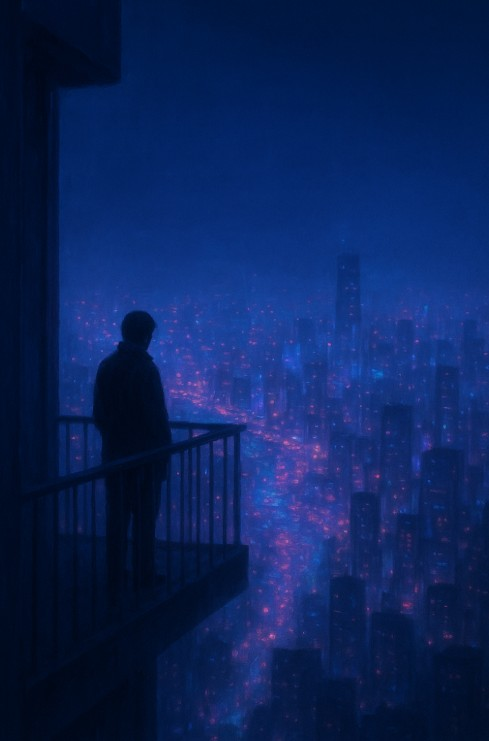
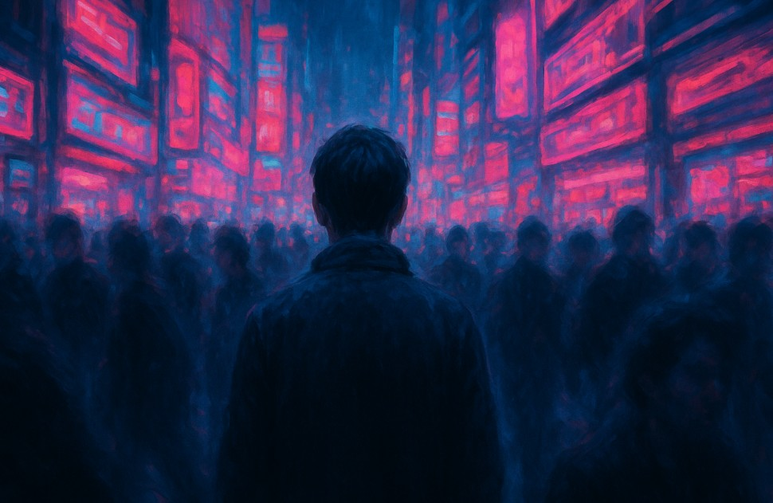
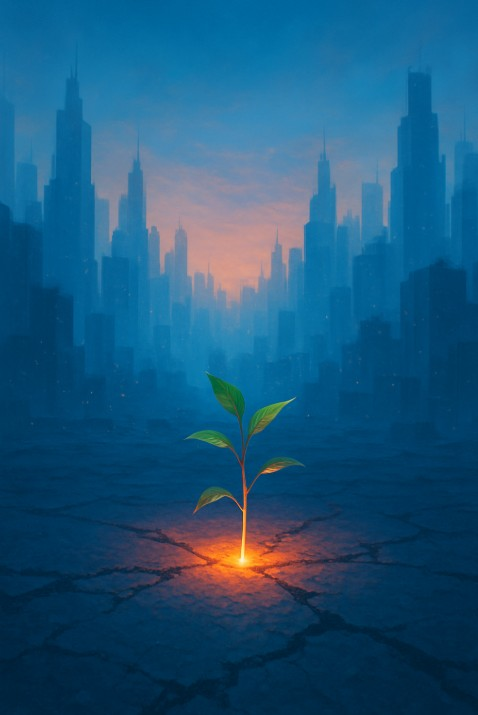
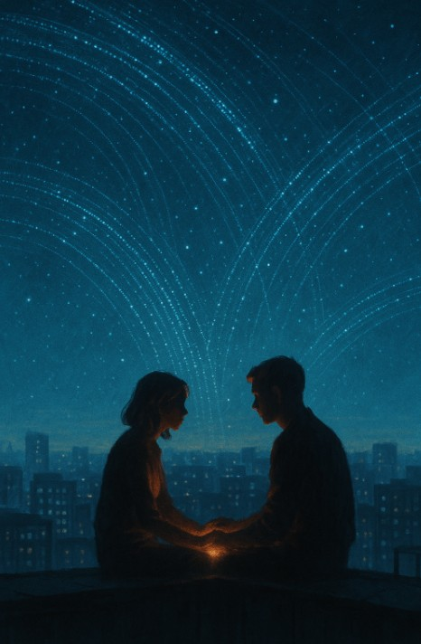

[LOG]: CORE_INIT_SUCCESS...
[LOG]: ASSETS_LOADED_100%...
[OWNER]: DAVID GONZÁLEZ BUSTAMANTE
[LOG]: ASSETS_LOADED_100%...
[OWNER]: DAVID GONZÁLEZ BUSTAMANTE
URBAN EMOTION MAP
INTERFACE v2.0 | CO-CREACIÓN IA GENERATIVA
INTERFACE v2.0 | CO-CREACIÓN IA GENERATIVA

"Desde la vigésima planta, el mundo es un río de neón silencioso. La inmensidad, al fin, es solo tuya."

"La ciudad te envuelve en un zumbido constante. Eres una pieza más del mecanismo."

"El amanecer pinta la ciudad con una luz nueva. Una flor desafía al hormigón."

"La verdadera red no es la que envían las antenas, sino la que teje una mirada."